INTRODUCTION
Table of Contents
| Topic | Page |
|---|---|
| Introduction | 1 |
| Verilog Syntax | 2 |
| Basic Logic Gates | 3 |
| Binary Adders and Subtractors | 4 |
| Latches | 5 |
| Flip Flops | 6 |
| Multiplexers | 7 |
| Demultiplexers | 8 |
| Parity Generator | 9 |
| Code converter | 10 |
| Comparators | 11 |
| Registers | 12 |
| Counters | 13 |
| Arithmetic Logic Unit | 14 |
| Encoders | 15 |
| Decoders | 16 |
| How ro make a verilog program | 17 |
| Bibliography | 18 |
| --- |
Verilog is a Hardware Description Language (HDL). They resemble programming languages specifically oriented to describe hardware structures and their behavior. This language describes an interconnection of components. Such a structural description, a netlist, can be used as input to logic simulation just as a schematic is used.
A typical procedure is used in employing an HDL description as simulation
input. The steps in the procedure are analysis, elaboration, and
initialization, followed by the simulation.
Analysis checks the description for violations of the syntax and semantic
rules for the HDL and produces an intermediate representation of the
design.
Elaboration traverses the design hierarchy represented by the description; in
this process, the design hierarchy is flattened to an interconnection of
modules described only by their behaviors.
The result of the analysis and elaboration performed by the compiler is a
simulation model of the original HDL description. This model is then passed
to the simulator for execution. Initialization sets all of the variables in the
simulation model to specified or default values.
Simulation executes the simulation model in either batch or interactive
mode with inputs specified by the user.
The testbench is a description that includes the design to be tested,
typically referred to as the Device Under Test (DUT). The testbench describes
a collection of hardware and software functions that apply inputs to the DUT
and analyze the outputs for correctness.
Verilog supports a design at many levels of abstraction. The primary three
kinds of abstraction in Verilog are
- Behavioral level
- Register-transfer level
- Gate level
Behavioral:
This is the highest level of abstraction provided by Verilog HDL. It describes the circuit using procedural statements (the "always" block, case, and if statements). At the behavioral level, the circuit is described using an algorithm consisting of a set of instructions executed one after the other sequentially.
Data-Flow:
This is the second highest level of abstraction. It specifies the circuit as a combination of operations and data transfer between the registers. In this approach, the 'assign' statement is used. An assign statement is a continuous statement where any signal changes on the right-hand side will update the output signal. Changes in the inputs are continuously monitored. Any synthesizable code is called RTL code. Gate-Level: This is the lowest level of abstraction. Here, the circuit is described by logical links and their timing properties. The module is implemented in terms of logic gates and interconnections between these gates. It resembles a schematic drawing with components connected with signals.
Functional Differences
Behavioral Level
Pros
- Easy to write and understand, especially for complex algorithms and high-level functionality.
- Portability: the same behavioral code can be synthesized into different hardware architectures.
- Enables early verification, allowing designers to test system functionality before committing to a particular hardware architecture.
Cons
- Less control over the hardware implementation details.
- Can be less efficient in terms of area, power, and performance than lower levels of abstraction.
- More difficult to optimize for timing and power.
Register Transfer Level (RTL)
Pros
- Offers greater control over the hardware implementation details.
- Can be optimized for timing, power, and area, allowing for more efficient designs.
- Can be used for both simulation and synthesis. Cons
- More difficult to write and understand than the behavioral level.
- Can be less portable than the behavioral level, since the same code may not synthesize correctly across different architectures.
- Can be more difficult to verify than the behavioral level, since the design is more complex.
Gate Level
Pros
- Provides the most detailed view of the hardware implementation.
- Highly optimized for area, power, and performance.
- Ideal for final verification of the design. Cons
- Very difficult to write and understand.
- Not portable: The code is specific to a particular hardware architecture.
- Verification can be very time-consuming and difficult, especially for complex designs.
VERILOG SYNTAX
CODE:
module half_adder(output s, c, input a, b);
assign s = a ^ b;
assign c = a & b;
endmodule
module is always terminated by endmodule. Always specify output first and
then input.
TESTBENCH:
module half_adder_test;
reg in1, in2;
wire out1, out2;
half_adder a1(out1,out2 ,in1, in2);
reg [2:0]count;
initial begin
for(count=0; count<4; count = count+1)
begin
{in1, in2} = count[1:0];
#20;
end
end
endmodule
reg: store input values
wire: store output values
begin end is used to specify a block of code.
BASIC LOGIC GATES
Logic gates are basic building blocks of digital electronics circuits that perform logical operations on one or more binary inputs and produce a binary output. In other words, a logic gate is an electronic device that operates on logical signals (digital signals) to perform a Boolean function.
There are several types of logic gates, including:
AND gate: It has two or more input signals and produces a HIGH output only
if all inputs are HIGH. The AND gate symbol is the dot or multiplication
symbol.
OR gate: It has two or more input signals and produces a HIGH output if at
least one input is HIGH. The OR gate symbol is the plus symbol.
NOT gate (Inverter): It has one input signal and produces the complement
of the input signal at its output. The NOT gate symbol is a triangle with a
circle at the output.
NAND gate: It is a combination of an AND gate and a NOT gate. It produces
a LOW output only if all inputs are HIGH. The NAND gate symbol is an AND
gate with a small circle at its output.
NOR gate: It is a combination of an OR gate and a NOT gate. It produces a
HIGH output only if all inputs are LOW. The NOR gate symbol is an OR gate
with a small circle at its output.
XOR gate: It has two input signals and produces a HIGH output if the two
inputs are different (i.e., one input is HIGH and the other is LOW). The XOR
gate symbol is the addition symbol with a circle around it.
XNOR gate: It is a combination of an XOR gate and a NOT gate. It produces a
HIGH output if the two inputs are the same (i.e., both inputs are HIGH or
both inputs are LOW). The XNOR gate symbol is an XOR gate with a small
circle at its output.
Binary Adders and Subtractors
HALF ADDER
A half-adder is an arithmetic circuit that generates the sum of two binary digits. The circuit has two inputs and two outputs. The input variables are the augend and addend bits to be added, and the output variables produce the sum and carry.
The Boolean functions for the two outputs, easily obtained from the truth table, are
S = XY + XY = X ⊕ Y
C = XY
| x | y | C | S |
|---|---|---|---|
| 0 | 0 | 0 | 0 |
| 0 | 1 | 0 | 1 |
| 1 | 0 | 0 | 1 |
| 1 | 1 | 1 | 0 |
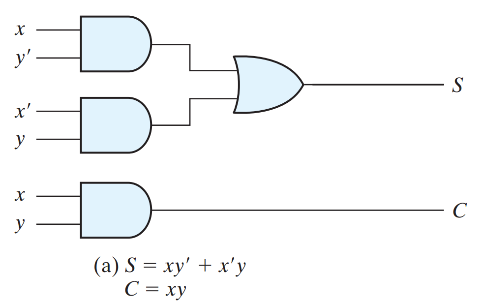
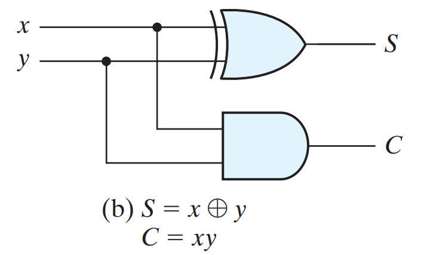
FULL ADDER
A full adder is a combinational circuit that forms
the arithmetic sum of three input bits. Two input
variables, denoted by X and Y, represent the two
significant bits to be added. The third input, Z,
represents the carry from the previous lower
significant position.
The simplified sum-of-product functions for the
two outputs are :
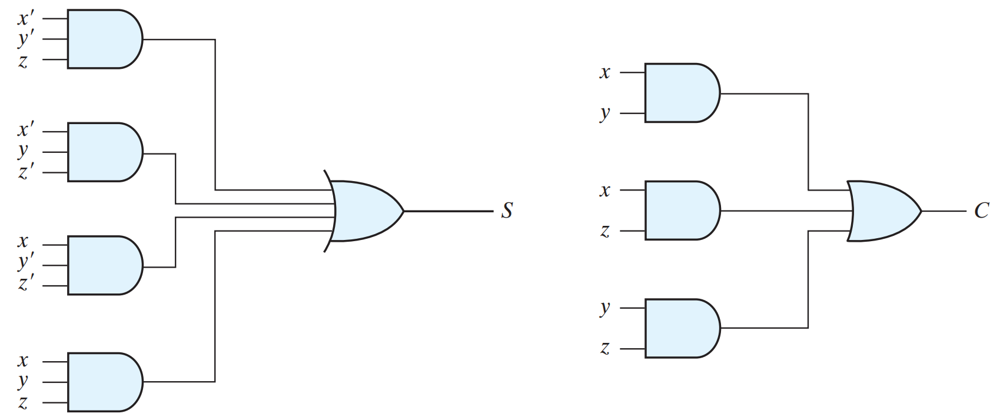
S = XYZ + XYZ + XY Z + XYZ
C = XY + XZ + YZ
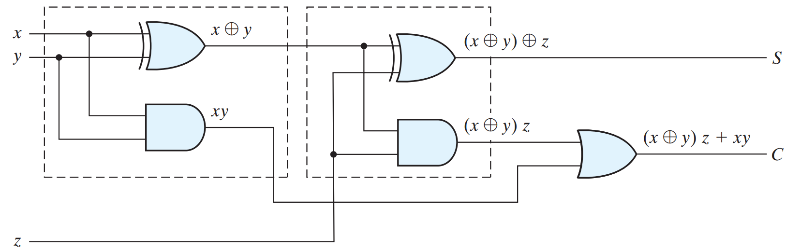
| S = (X ⊕ Y) ⊕ Z |
|---|
| C = XY + Z(X ⊕ Y) |
|---|
RIPPLE CARRY ADDER
A parallel binary adder is a digital circuit that produces the arithmetic sum of
two binary numbers using only combinational logic. The parallel adder uses
n full adders in parallel, with all input bits applied simultaneously to produce
the sum.
The full adders are connected in cascade, with the carry output from one full
adder connected to the carry input of the next full adder. Since a 1 carry may
appear near the least significant bit of the adder and yet propagate through
many full adders to the most significant bit, just as a wave ripples outward
from a pebble dropped in a pond, the parallel adder is referred to as a ripple
carry adder.
CARRY LOOK AHEAD ADDER
Define two new binary variables
|Pi = Ai XOR Bi|
|---|
| Gi = Ai AND Bi |
|---|
the output sum and carry can respectively be expressed as
Si = Pi XOR Ci
Ci+1 = Gi + (Pi AND Ci)
Each sum output requires two exclusive-OR gates. The output of the first exclusive-OR gate generates the Pi variable, and the AND gate generates the Gi variable. The carries are propagated through the carry lookahead generator and applied as inputs to the second exclusive-OR gate. All output carries are generated after a delay through two levels of gates. Thus, outputs S1 through S3 have equal propagation delay times.
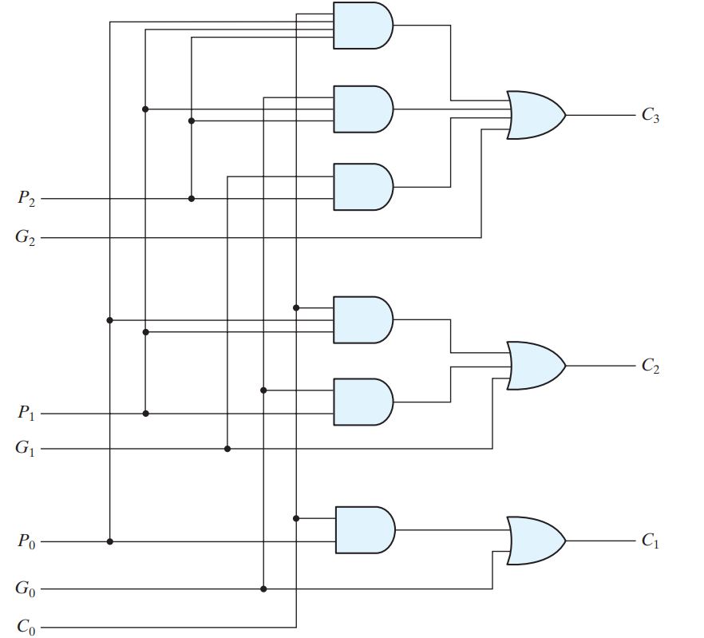 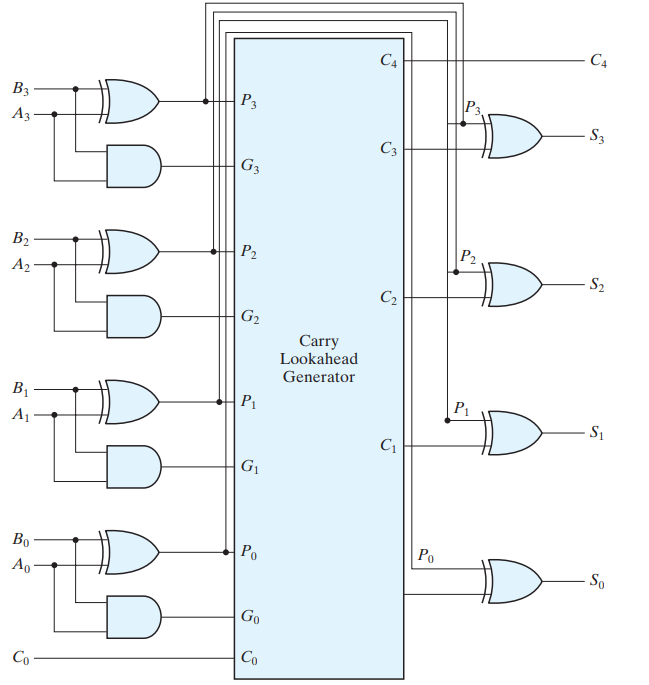
HALF SUBTRACTOR
A half subtractor is a combinational circuit that subtracts two single-bit binary numbers (A and B) and produces two output bits: the difference (D) and the borrow (B). The half subtractor is called "half" because it can only subtract two single-bit binary numbers, unlike a full subtractor that can subtract two multi-bit binary numbers. D= A XOR B B’ = Abar AND B
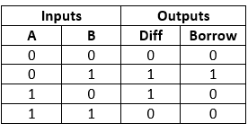 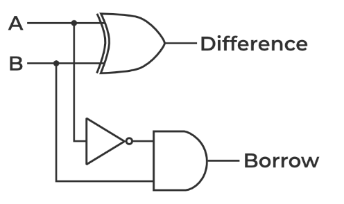
FULL SUBTRACTOR
A full subtractor is a combinational circuit that subtracts two single-bit binary numbers (A and B) along with a borrow (Bin) and produces two output bits: the difference (D) and the borrow (Bout). The full subtractor is an extension of the half subtractor, which can only subtract two single-bit binary numbers.
D = A XOR B XOR Bin
B’ = Abar AND B OR ((A XOR B)bar)Bin
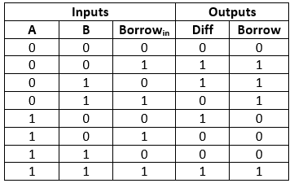 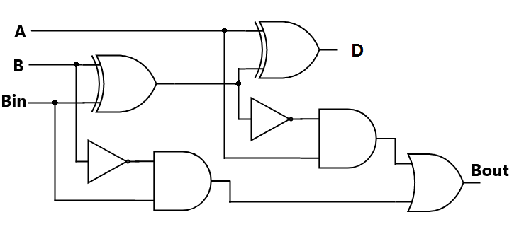
BINARY ADDER AND SUBTRACTOR
M-N where M-minuend and N is subtrahend When performing a subtraction we complement the subtrahend N, and when performing an addition we do not complement N.
The 2s complement can be obtained by taking the 1s complement and adding 1 to the least significant bit. The 1s complement can be implemented easily with inverter circuits, and we can add 1 to the sum by making the input carry of the parallel adder equal to 1. The input carry C0 must be equal to 1. The operation that is performed becomes A plus the 1s complement of B plus 1. This is equal to A plus the 2s complement of B. For unsigned numbers, it gives A - B if A >= B or the 2s complement of B - A if A <img B
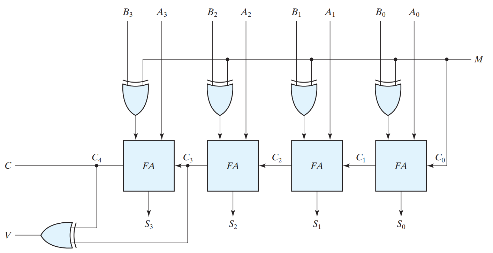
LATCHES
SR LATCH
The SR latch is a circuit constructed from two cross- coupled NOR gates. The latch has two inputs, labeled S for set and R for reset, and two useful states. When output Q = 1 and Q = 0, the latch is said to be in the set state. When Q = 0 and Q = 1, it is in the reset state. Outputs Q and Q are normally the complements of each other. When both inputs are equal to 1 at the same time, an undefined state with both outputs equal to 0 occurs.
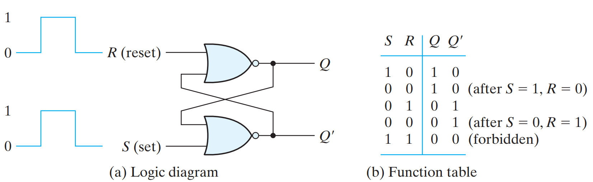
S̅R̅ LATCH
The SR latch with two cross- coupled NAND gates. It operates with both inputs normally at 1, unless the state of the latch has to be changed. The application of a 0 to the S input causes output Q to go to 1, putting the latch in the set state. When the S input goes back to 1, the circuit remains in the set state. With both inputs at 1, the state of the latch is changed by placing a 0 on the R input. This causes the circuit to go to the reset state and stay there, even after both inputs return to 1. The condition that is undefined for this NAND latch is when both inputs are equal to 0 at the same time, an input combination that should be avoided. When the NAND latch requires a 0 signal to change its state, it is referred to as an SR latch.
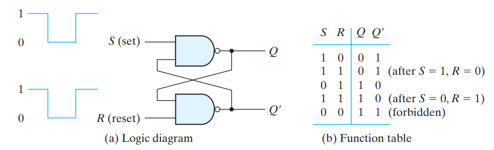
SR LATCH WITH CONTROL INPUT
It consists of the basic NAND latch and two additional NAND gates. The control input C acts as an enable signal for the other two inputs. The output of the NAND gates stays at the logic- 1 level as long as the control input remains at 0.
When the control input goes to 1, information from the S and R inputs is
allowed to affect the S R latch. The set state is reached with S = 1, R = 0, and C
= 1. To change to the reset state, the inputs must be S = 0, R = 1, and C = 1. In either case, when C returns to 0, the circuit remains in its current state.
Control input C = 0 disables the circuit so that the state of the output does not change, regardless of the values of S and R.
Moreover, when C = 1 and both the S and R inputs are equal to 0, the state of the circuit does not change.An undefined state occurs when all three inputs are equal to 1. This condition places 0s on both inputs of the basic S R latch,
giving an undefined state.
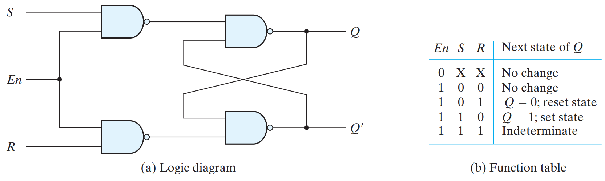
D LATCH
One way to eliminate the undesirable undefined state in the SR latch is to ensure that inputs S and R are never equal to 1 at the same time. This is done in the D latch, shown in Figure 4-8. This latch has only two inputs: D (data)
and C (control). The complement of the D input goes directly to the S input, and D is applied to the R input.
As long as the control input is 0, the S R latch has both inputs at the 1 level, and the circuit cannot change state regardless of the value of D. The D input is sampled when C = 1. If D is 1, the Q output goes to 1, placing the circuit in the set state. If D is 0, output Q goes to 0, placing the circuit in the reset state. The D latch receives its designation from its ability to hold data in its internal storage. The binary information present at the data input of the D latch is transferred to the Q output when the control input is enabled (1). The
output follows changes in the data input, as long as the control input is
enabled. When the control input is disabled (0), the binary information that
was present at the data input at the time the transition in C occurred is
retained at the Q output until the control input C is enabled again.
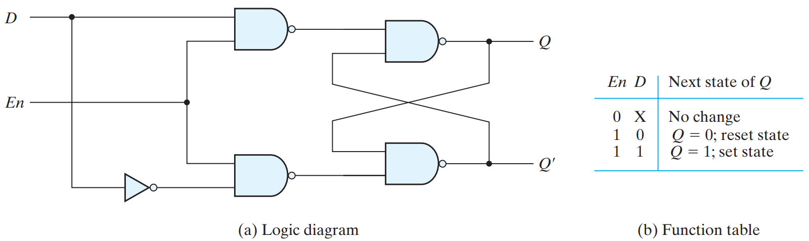
FLIP FLOPS
There are basically 4 types of flip-flops: 1. SR Flip-Flop 2. JK Flip-Flop 3. D Flip-Flop 4. T Flip-Flop
SR FLIP-FLOP
SR flip-flop operates with only positive clock transitions or negative clock transitions. Whereas, SR latch operates with an enable signal. The circuit diagram of SR flip-flop is shown in the following figure.This circuit has two inputs S & R and two outputs QN and Qn+1, present and next state respectively. The operation of the SR flip-flop is similar to SR Latch. But, this flip-flop affects the outputs only when positive transition of the clock signal is applied instead of active enable. Qn+1 = S + R’Qn
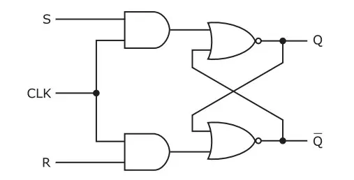
JK FLIP-FLOP
JK flip-flop is the modified version of SR flip-flop. It operates with only positive clock transitions or negative clock transitions. This circuit has two inputs J & K and two outputs Qn and Qn+1, present and next state respectively, JK flip-flop can be used for one of these four functions such as Hold, Reset, Set & Complement of present state based on the input conditions, when positive transition of clock signal is applied.
Qn+1 = J(Qn)’ + K’(Qn)
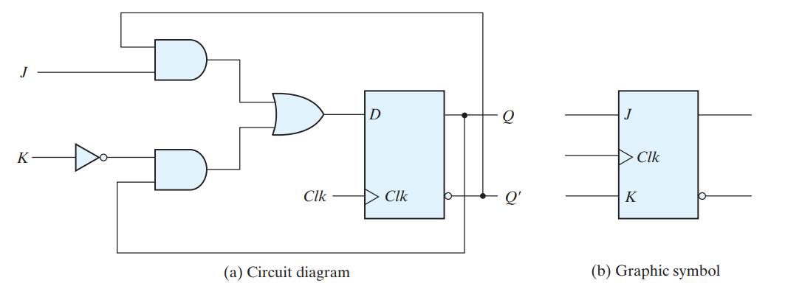
D FLIP-FLOP
D flip-flop operates with only positive clock transitions or negative clock transitions. Whereas, D latch operates with an enable signal. That means, the output of D flip-flop is insensitive to the changes in the input, D except for active transition of the clock signal. This circuit has single input D and two outputs Qn and Qn+1. This flip-flop affects the outputs only when positive transition of the clock signal is applied instead of active enable. D flip-flop always holds the information, which is available on data input, D of earlier positive transition of clock signal. Next state of D flip-flop is always equal to data input, D for every positive transition of the clock signal.
Qn+1 = D
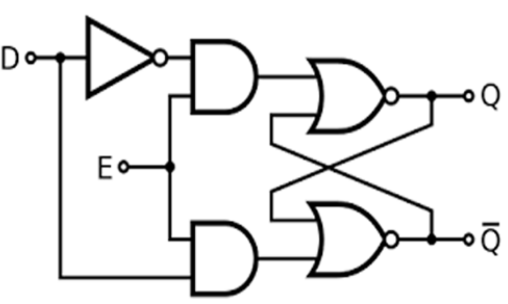
T FLIP-FLOP
T flip-flop is the simplified version of JK flip-flop. It is obtained by connecting the same input ‘T’ to both inputs of JK flip-flop. It operates with only positive clock transitions or negative clock transitions. This circuit has single input T and two outputs Qn and Qn+1. The operation of the T flip-flop is the same as that of the JK flip-flop. Here, we considered the inputs of JK flip-flop as J = T and K = T in order to utilize the modified JK flip-flop for 2 combinations of inputs. So, we eliminated the other two combinations of J & K, for which those two values complement each other in a T flip-flop.
Qn+1 = T’Q(n) + (Q(n))’T = T XOR Q(n)
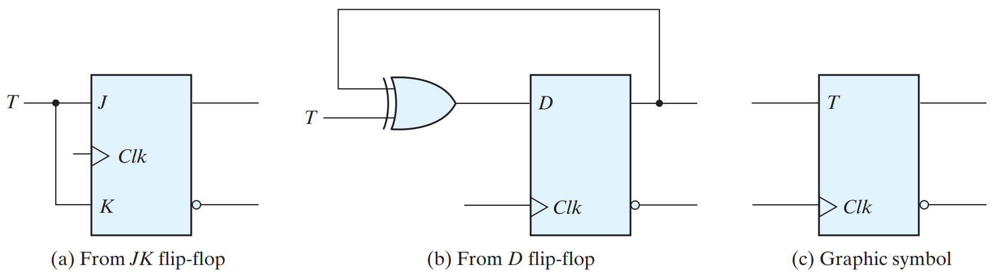
MULTIPLEXERS
2-1 MUX
It selects binary information from one of many input lines and directs the
information to a single output line. The selection of a particular input line is
controlled by a set of input variables, called selection inputs.
there are 2^n input lines and n selection inputs whose bit combinations
determine which input is selected. , if the select input S = 0, the output of
the multiplexer takes on the values of I 0 , and, if input S = 1, the output of
the multiplexer takes on the values of I 1 . Thus, S selects either input I 0 or
input I 1 to appear at output Y.
We can see that the equation for the 2–to–1-line multiplexer output Y is
Y = S’I0 + SI1
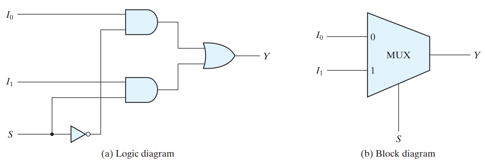
4-1 MUX
The function Y depends on four inputs I 0 , I 1 , I 2 , and I 3 and two select
inputs S1 and S0 . By placing the values of I 0
through I 3 in the Y column. Since there are six
variables, and only S1 and S0 are fixed, this single
row represents 16 rows of the corresponding full
truth table. From the table, we can write the
equation for Y as
Y = S1’S0’ I0 + S1’S0 I1 + S1S0’I2 + S1S0 I3
| S1 | S2 | Y |
|---|---|---|
| 0 | 0 | I0 |
| 0 | 1 | I1 |
| 1 | 0 | I2 |
| 1 | 1 | I3 |
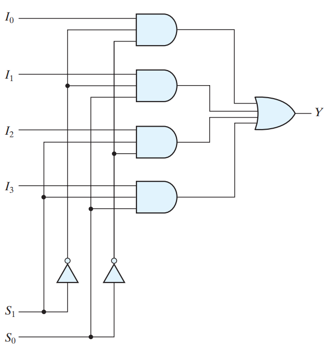
DEMULTIPLEXERS
1:2 DEMUX
A 1-to-2 demultiplexer consists of one input
line, two output lines and one select line.
The signal on the select line helps to switch
the input to one of the two outputs.
When the select input is LOW, then the
input will be passed to Y0 and if the select
input is HIGH, then the input will be passed
to Y1
Y0 = S’ D
Y1 = S D
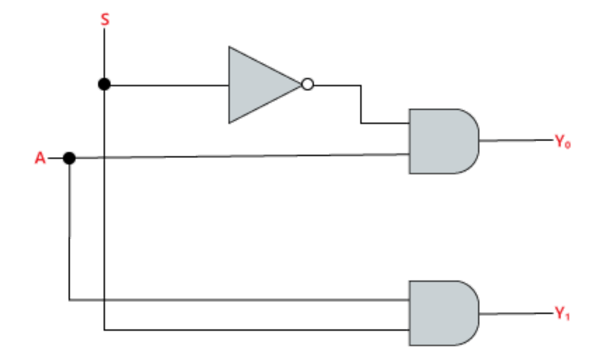 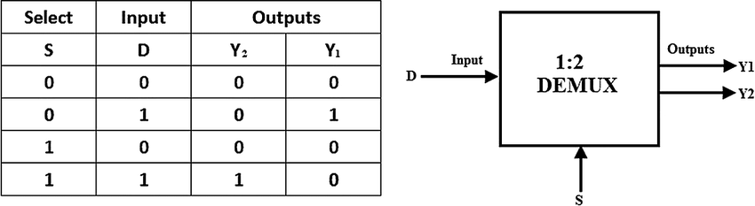
PARITY GENERATOR
Many systems use a parity bit as a means for bit error detection. Any group of bits contains either an even or an odd number of 1s. A parity bit is attached to a group of bits to make the total number of 1s in a group always even or always odd. An even parity bit makes the total number of 1s even, and an odd parity bit makes the total odd. A parity bit provides for the detection of a single bit error (or any odd number of errors, which is very unlikely) but cannot check for two errors in one group. For instance, let’s assume that we wish to transmit the BCD code 0101. (Parity can be used with any number of bits; we are using four for illustration.) The total code transmitted, including the even parity bit, is
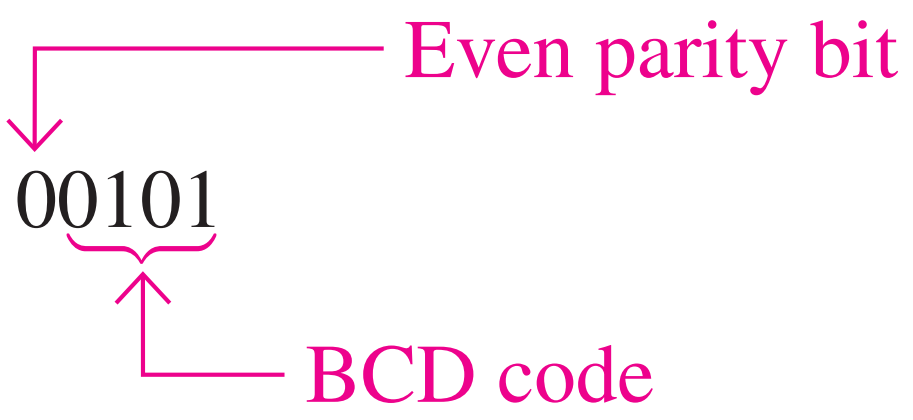
Now let’s assume that an error occurs in the third bit from the left (the 1 becomes a 0)
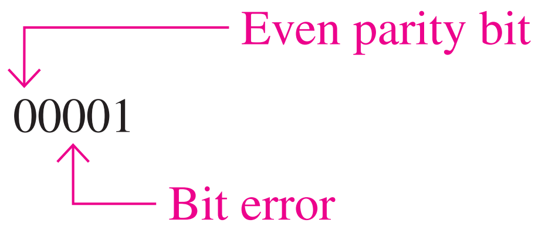
When this code is received, the parity check circuitry determines that there is only a single 1 (odd number), when there should be an even number of 1s. Because an even number of 1s does not appear in the code when it is received, an error is indicated.
CODE CONVERTER
BCD to Binary Code converter
The binary numbers representing the weights of the BCD bits are summed to produce the total binary number. The binary equivalent of each BCD bit is a binary number representing the weight of that bit within the total BCD number.
Binary to Gray
Conversion between binary code and Gray code is sometimes useful. The following rules explain how to convert from a binary number to a Gray code word: 1. The most significant bit (left-most) in the Gray code is the same as the corresponding MSB in the binary number. 2. Going from left to right, add each adjacent pair of binary code bits to get the next Gray code bit. Discard carries
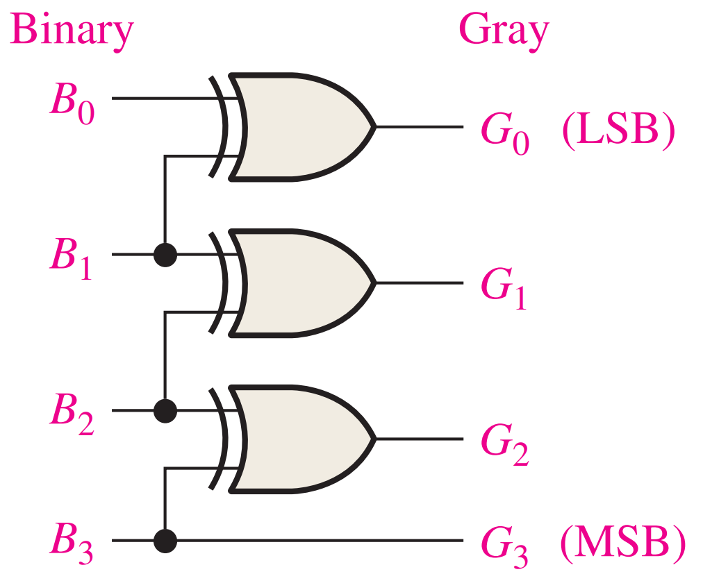 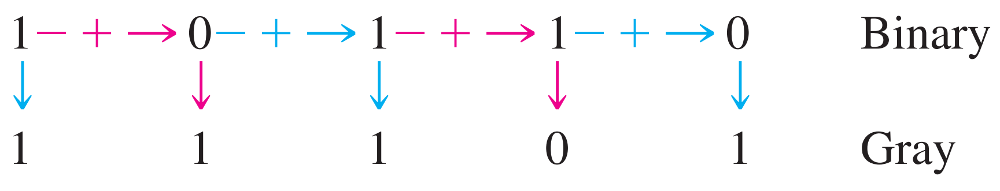
Gray to Binary
To convert from Gray code to binary, use a similar method; however, there are some differences. The following rules apply:
- The most significant bit (left-most) in the binary code is the same as the corresponding bit in the Gray code.
- Add each binary code bit generated to the Gray code bit in the next adjacent position. Discard carries.
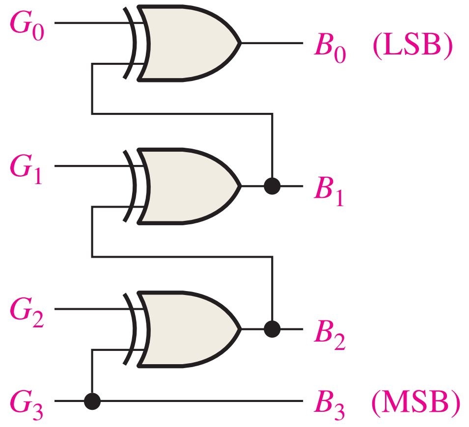 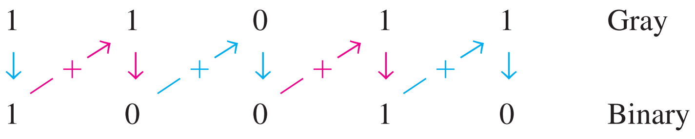
COMPARATORS
The exclusive-NOR gate can be used as a basic comparator because its output is a 0 if the two input bits are not equal and a 1 if the input bits are equal. The basic comparator can be expanded to any number of bits. The AND gate sets the condition that all corresponding bits of the two numbers must be equal if the two numbers themselves are equal. To determine an inequality of binary numbers A and B, you first examine the highest order bit in each number. The following conditions are possible: 1. If A3 = 1 and B3 = 0, number A is greater than number B. 2. If A3 = 0 and B3 = 1, number A is less than number B. 3. If A3 = B3, then you must examine the next lower bit position for an inequality. These three operations are valid for each bit position in the numbers. The general procedure used in a comparator is to check for an inequality in a bit position, starting with the highest-order bits (MSBs). When such an inequality is found, the relationship of the two numbers is established, and any other inequalities in lower-order bit positions must be ignored because it is possible for an opposite indication to occur; the highest-order indication must take precedence.
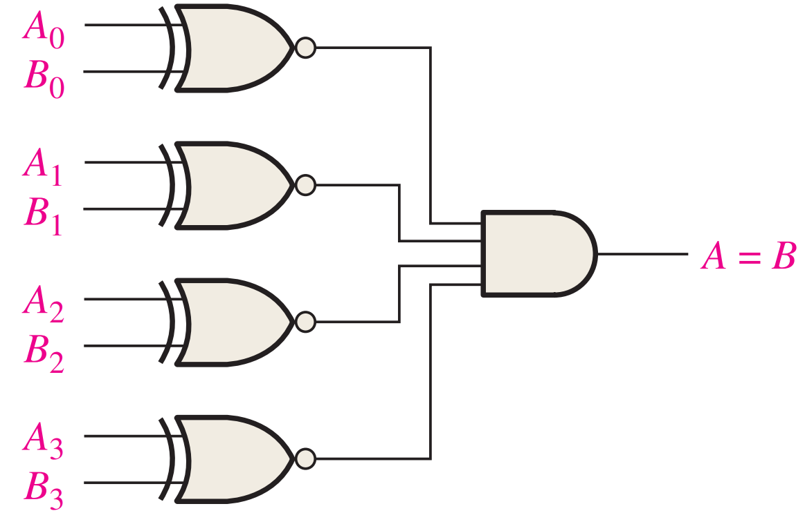
Registers
A register is a group of flip‐flops, each one of which shares a common clock and is capable of storing one bit of information. An n ‐bit register consists of a group of n flip‐flops capable of storing n bits of binary information. In addition to the flip‐flops, a register may have combinational gates that perform certain data‐processing tasks.
Four‐bit register
The common clock input triggers all flip‐flops on the positive edge of each pulse, and the binary data available at the four inputs are transferred into the register. The value of (I3 , I2 , I1 , I0) immediately before the clock edge determines the value of (A3 , A2 , A1 , A0) after the clock edge. The four outputs can be sampled at any time to obtain the binary information stored in the register. The input Clear_b goes to the active‐low R (reset) input of all four flip‐flops. When this input goes to 0, all flip‐flops are reset asynchronously. The Clear_b input is useful for clearing the register to all 0’s prior to its clocked operation. The R inputs must be maintained at logic 1 (i.e., de-asserted) during normal clocked operation. Note that, depending on the flip‐flop, either Clear, Clear_b, reset, or reset_b can be used to indicate the transfer of the register to an all 0’s state.
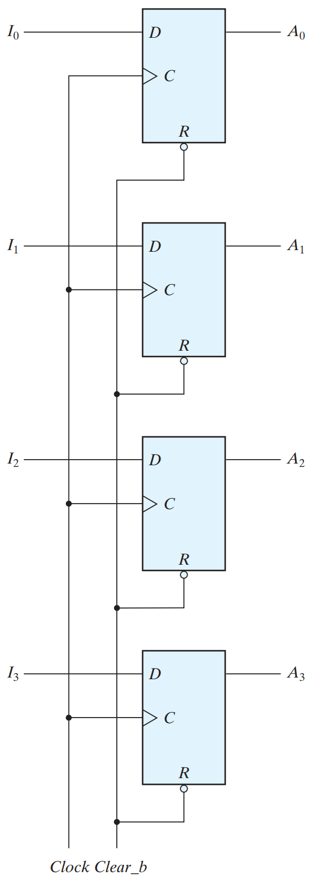
Four bit register with parallel loadGi = Ai AND Bi
A four‐bit data‐storage register with a load control input that is directed through gates and into the D inputs of the flip‐flops. The additional gates implement a two‐channel mux whose output drives the input to the register with either the data bus or the output of the register. The load input to the register determines the action to be taken with each clock pulse.
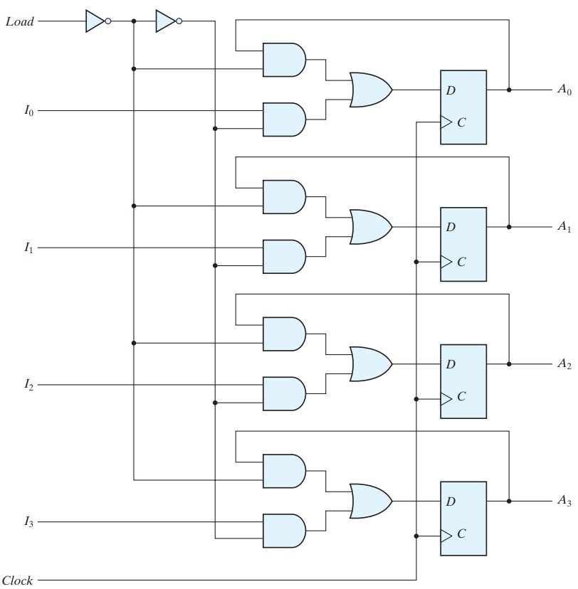
SHIFT REGISTERS
SERIAL IN/SERIAL OUT REGISTERS
The serial in/serial out shift register accepts data serially—that is, one bit at a time on a single line. It produces the stored information on its output also in serial form .
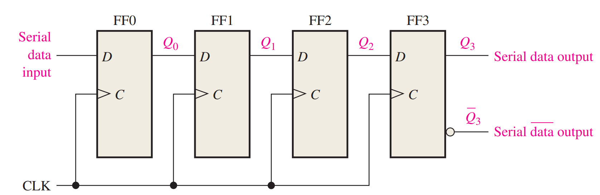
Serial In/Parallel Out Shift Registers
Data bits are entered serially (least-significant bit first) into a serial in/parallel out shift register in the same manner as in serial in/serial out registers. The difference is the way in which the data bits are taken out of the register; in the parallel output register, the output of each stage is available. Once the data is stored, each bit appears on its respective output line, and all bits are available simultaneously, rather than on a bit-by-bit basis as with the serial output.
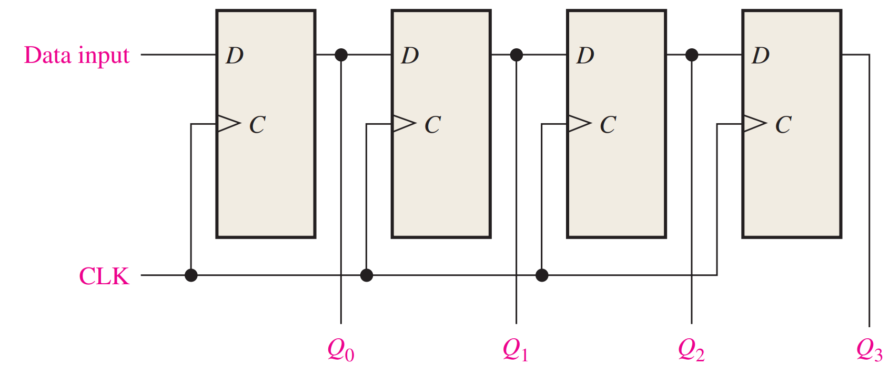
Parallel In/Serial Out Shift Registers
For a register with parallel data inputs, the bits are entered simultaneously into their respective stages on parallel lines rather than on a bit-by-bit basis on one line as with serial data inputs.
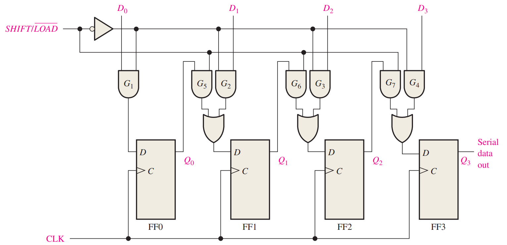
Parallel In/Parallel Out Shift Registers
Parallel entry and parallel output of data have been discussed. The parallel in/parallel out register employs both methods. Immediately following the simultaneous entry of all data bits, the bits appear on the parallel outputs.
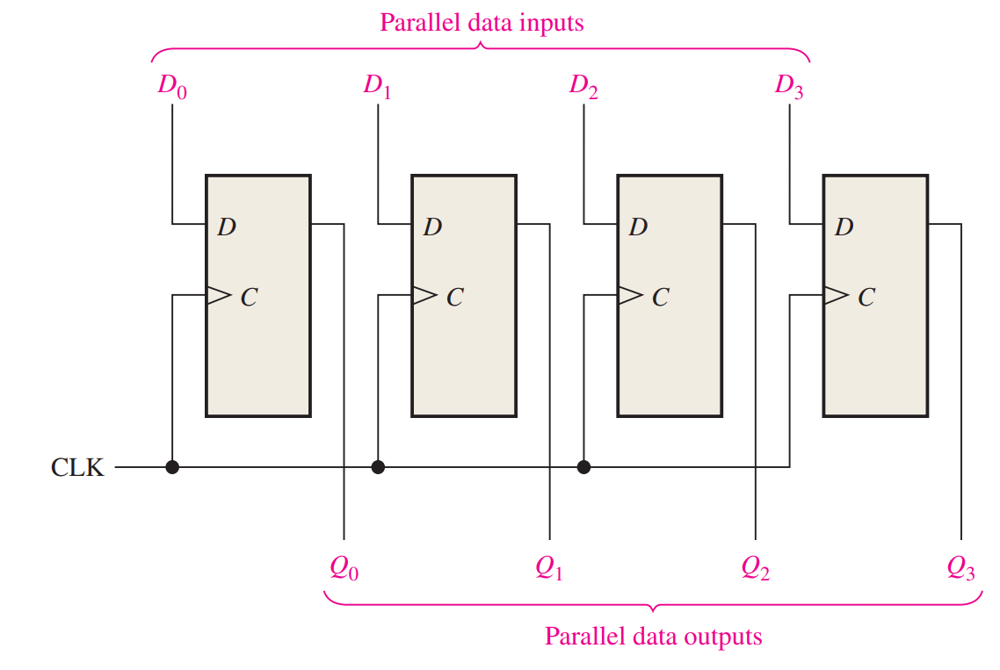
COUNTERS
A register that goes through a prescribed sequence of states upon the application of input pulses is called a counter. The input pulses may be clock pulses, or they may originate from some external source and may occur at a fixed interval of time or at random. The sequence of states may follow the binary number sequence or any other sequence of states.
BINARY RIPPLE COUNTER
A binary ripple counter consists of a series connection of complementing flip‐flops, with the output of each flip‐flop connected to the C input of the next higher order flip‐flop. The flip‐flop holding the least significant bit receives the incoming count pulses. A complementing flip‐flop can be obtained from a JK flip‐flop with the J and K inputs tied together or from a T flip‐flop. A third possibility is to use a D flip‐flop with the complement output connected to the D input.The output of each flip‐flop is connected to the C input of the next flip‐flop in sequence. The flip‐flop holding the least significant bit receives the incoming count pulses. The bubble in front of the dynamic indicator symbol next to C indicates that the flip‐flops respond to the negative‐edge transition of the input. The negative transition occurs when the output of the previous flip‐flop to which C is connected goes from 1 to 0.
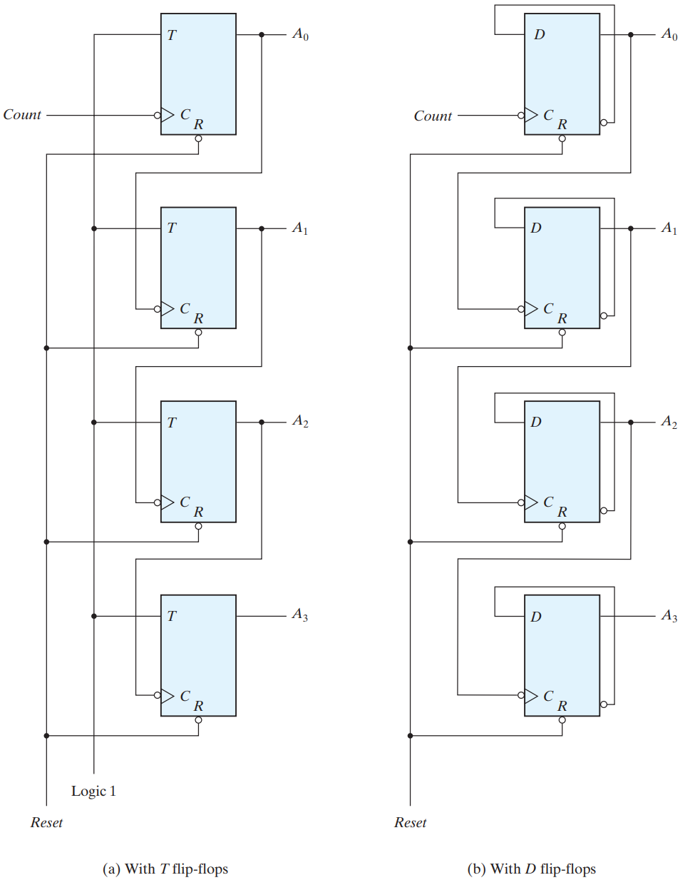
BCD RIPPLE COUNTER
A decimal counter follows a sequence of 10 states and returns to 0 after the count of 9. Such a counter must have at least four flip‐flops to represent each decimal digit, since a decimal digit is represented by a binary code with at least four bits. The sequence of states in a decimal counter is dictated by the binary code used to represent a decimal digit. The four outputs are designated by the letter symbol Q, with a numeric subscript equal to the binary weight of the corresponding bit in the BCD code. Note that the output of Q1 is applied to the C inputs of both Q2 and Q8 and the output of Q2 is applied to the C input of Q4. The J and K inputs are connected either to a permanent 1 signal or to outputs of other flip‐flops.
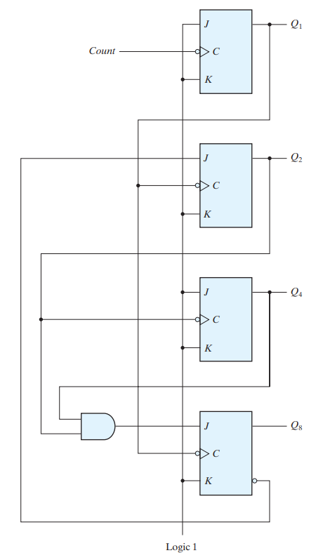
4 BIT SYNCHRONOUS BINARY COUNTER
The flip‐flop in the least significant position is complemented with every pulse. A flip‐flop in any other position is complemented when all the bits in the lower significant positions are equal to 1 . Synchronous binary counters have a regular pattern and can be constructed with complementing flip‐flops and gates. The C inputs of all flip‐flops are connected to a common clock. The counter is enabled by Count_enable. If the enable input is 0, all J and K inputs are equal to 0 and the clock does not change the state of the counter. The first stage, A0, has its J and K equal to 1 if the counter is enabled. The other J and K inputs are equal to 1 if all previous least significant stages are equal to 1 and the count is enabled. The chain of AND gates generates the required logic for the J and K inputs in each stage. The counter can be extended to any number of stages, with each stage having an additional flip‐flop and an AND gate that gives an output of 1 if all previous flip‐flop outputs are 1. Note that the flip‐flops trigger on the positive edge of the clock.
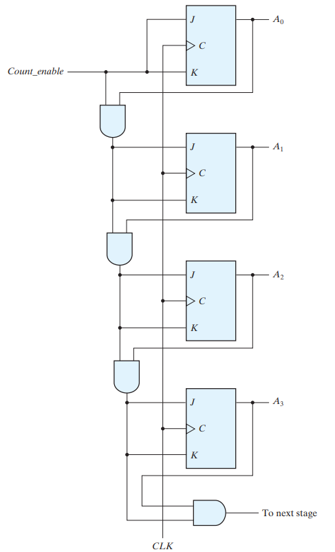
FOUR BIT UP-DOWN BINARY COUNTER
The two operations can be combined in one circuit to form a counter capable of counting either up or down. It has an up control input and a down control input. When the up input is 1, the circuit counts up, since the T inputs receive their signals from the values of the previous normal outputs of the flip‐flops.
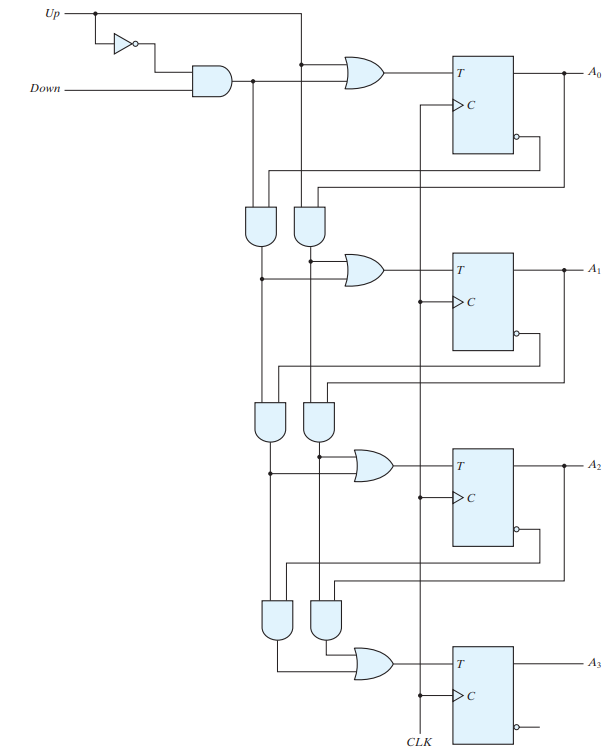
BINARY COUNTER WITH PARALLEL LOAD
When equal to 1, the input load control disables the count operation and causes a transfer of data from the four data inputs into the four flip‐flops. If both control inputs are 0, clock pulses do not change the state of the register. The carry output becomes a 1 if all the flip‐flops are equal to 1 while the count input is enabled. This is the condition for complementing the flip‐flop that holds the next significant bit. The carry output is useful for expanding the counter to more than four bits. The speed of the counter is increased when the carry is generated directly from the outputs of all four flip‐flops, because the delay to generate the carry bit is reduced. A counter with a parallel load can be used to generate any desired count sequence.the Count control is set to 1 to enable the count through the CLK input. Also, recall that the Load control inhibits the count and that the clear operation is independent of other control inputs.
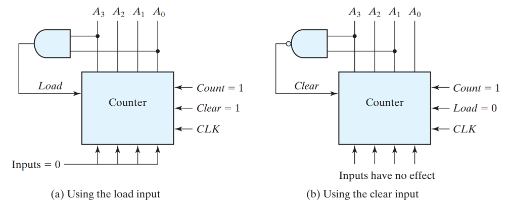 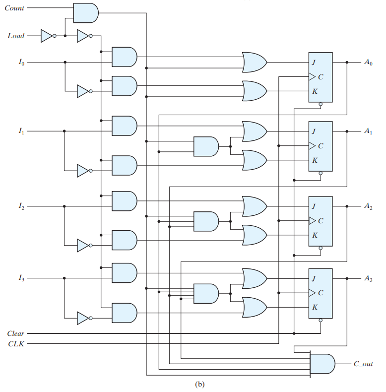
ARITHMETIC LOGIC UNIT (ALU)
The ALU, or arithmetic logic unit, is a crucial component of the CPU (central processing unit) in a computer system. It is responsible for carrying out arithmetic and logic operations. Also referred to as the integer unit (IU), it is an integrated circuit found in both CPUs and GPUs. The ALU is the final stage in the processor where calculations are performed. It possesses the capability to handle various tasks related to arithmetic and logic operations, including addition, subtraction, shifting operations, as well as Boolean comparisons such as XOR, OR, AND, and NOT operations. It operates on binary numbers and can execute mathematical and bitwise operations. The ALU consists of two units: the arithmetic unit (AU) and the logic unit (LU). By utilizing operands and codes, the ALU determines which operations to perform based on the input data provided. Once the ALU completes processing the input, the resulting information is sent to the computer's memory.
Here are the main functions of an ALU:
Arithmetic Operations: The ALU performs various arithmetic operations on binary numbers, such as addition, subtraction, multiplication, and division. It uses binary addition and subtraction circuits to handle these operations efficiently.
Logical Operations: The ALU executes logical operations on binary data, including AND, OR, XOR (exclusive OR), and NOT. These operations manipulate individual bits or binary values to determine logical relationships and produce logical results.
Comparison Operations: The ALU performs comparison operations to determine the relationship between two binary values. It can compare if two values are equal, not equal, greater than, less than, greater than or equal to, or less than or equal to each other. The result of these comparisons is typically represented by setting specific flags or registers in the CPU.
Bitwise Operations: The ALU carries out bitwise operations, which manipulate individual bits in binary numbers. These operations include shifting the bits left or right, rotating bits, and masking operations. Bitwise operations are commonly used in tasks such as data manipulation, encryption, and signal processing.
Conditional Operations: The ALU supports conditional operations, enabling the CPU to execute different instructions based on certain conditions. For example, it can perform conditional branching, where the CPU jumps to a specific instruction address based on the result of a comparison operation.
Data Movement: The ALU may also handle data movement operations within the CPU. This involves transferring data between registers, memory, and other CPU components.
ENCODER
An encoder is a digital circuit that performs the inverse operation of a decoder. An encoder has 2n (or fewer) input lines and n output lines.
PRIORITY ENCODER
A priority encoder is an encoder circuit that includes the priority function. The operation of the priority encoder is such that if two or more inputs are equal to 1 at the same time, the input having the highest priority will take precedence. In addition to the two outputs x and y , the circuit has a third output designated by V ; this is a valid bit indicator that is set to 1 when one or more inputs are equal to 1. If all inputs are 0, there is no valid input and V is equal to 0. The other two outputs are not inspected when V equals 0 and are specified as don’t-care conditions.
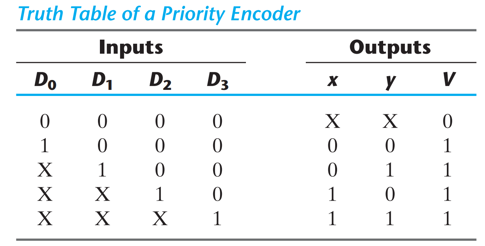 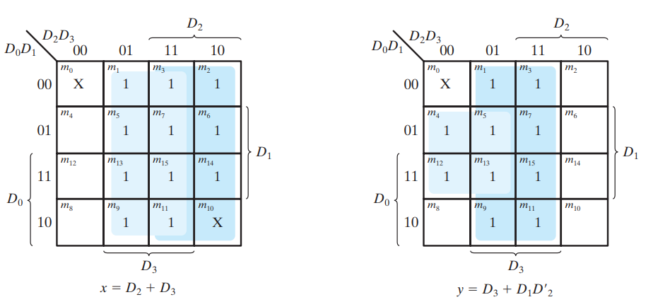
x = D2+ D3
y = D3 + D1 D 2
V = D0 + D1 + D2 + D3
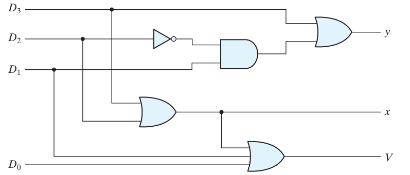
DECODER
A decoder is a combinational circuit that converts binary information from n input lines to a maximum of 2n unique output lines.The decoders presented here are called n -to- m -line decoders, where m … 2^n.
3-8 LINE DECODER
The three inputs are decoded into eight outputs, each representing one of the minterms of the three input variables. The three inverters provide the complement of the inputs, and each one of the eight AND gates generates one of the minterms.
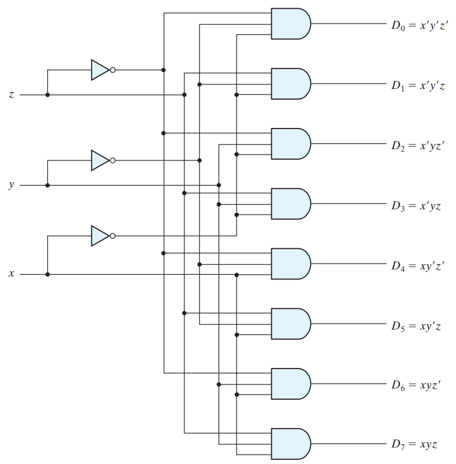 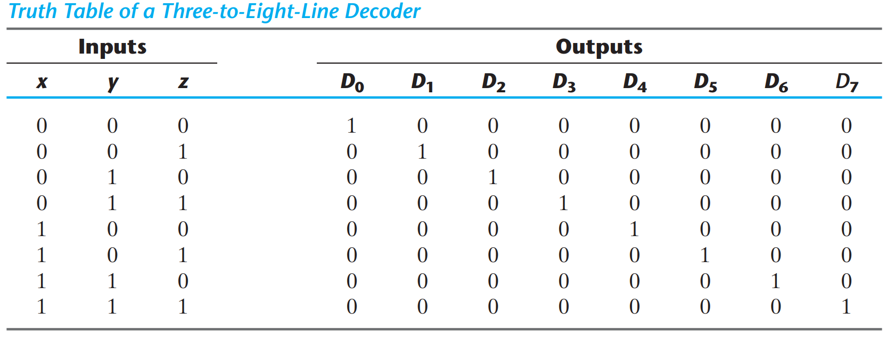
2-4 LINE DECODER WITH ENABLE INPUT
The circuit operates with complemented outputs and a complement enable input. The decoder is enabled when E is equal to 0 (i.e., active-low enable). As indicated by the truth table, only one output can be equal to 0 at any given time; all other outputs are equal to 1. The output whose value is equal to 0 represents the minterm selected by inputs A and B . The circuit is disabled when E is equal to 1, regardless of the values of the other two inputs. When the circuit is disabled, none of the outputs are equal to 0 and none of the minterms are selected.
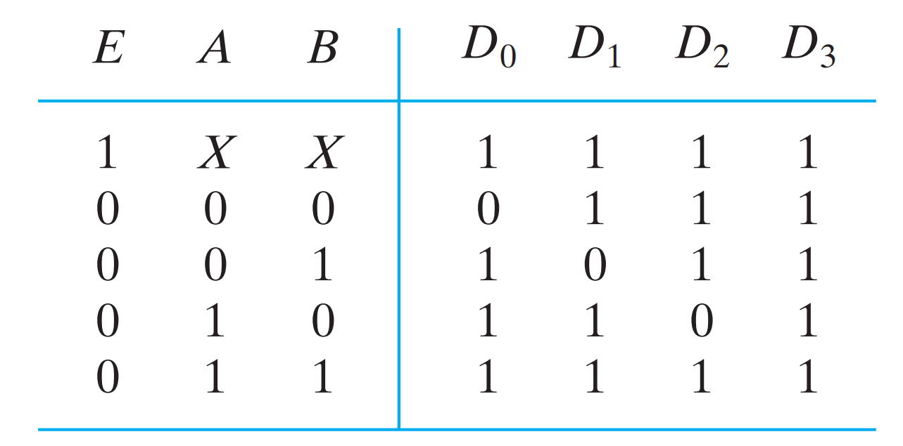 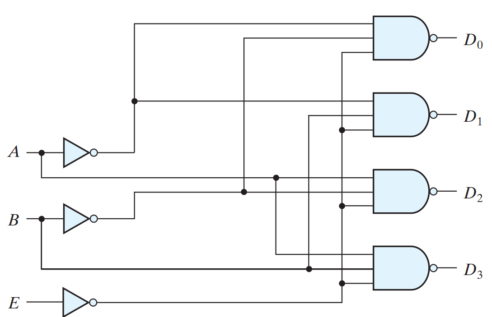
HOW TO MAKE A VERILOG PROGRAM
{kind=link}
Create a New Project in your own version of Quartus Prime.
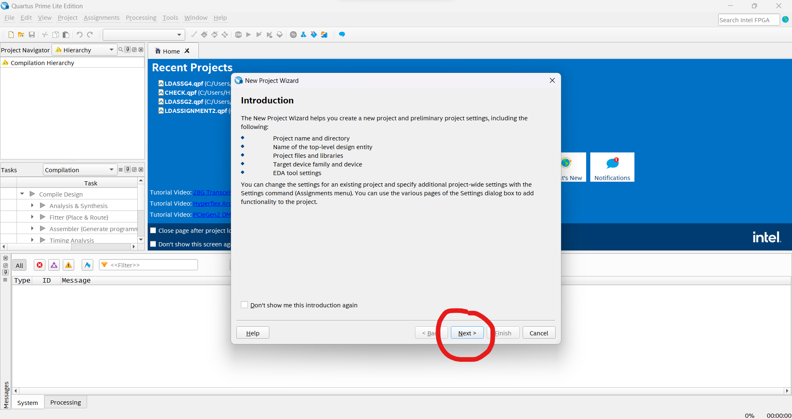
Select an appropriate directory for your Verilog project files and create an empty project file template.
Use the 10M50DAF484C7G Board from the MAX 10 Family.
Set ModelSim as your Simulation Tool (ModelSim must be installed prior) and finish the initialization of the project.
Click on the file icon in the top left corner and create a new Verilog HDL file.
When you wish to save your program, simply use Ctrl+S or click the Save icon in the top left corner.
Before running your program, you must first set a testbench for it. Do this by going into the Assignments menu and clicking Settings.
Change the NativeLink Setting to Compile Test Bench and select the Test Bench file for your program.
Create a new Test Bench if you are creating one for a new program that has not been made before.
Name your Test Bench appropriately (usually just the name of the test bench file) and add it to the list of Test Benches.
After setting your testbench, you can now run and compile your program by clicking on the third play button.
You will be able to view your circuit design and how it is structured, and simulate results using the test bench by going to the Tools menu.
BIBLIOGRAPHY
- Digital Design, 5th Edition by M Morris Mano and Michael Ciletti
- Digital Fundamentals by Floyd and Jain
- electronicshub.org/demultiplexerdemux
- tutorialspoint.com/digital_circuits/digital_circuits_flip_flops
- tutorialspoint.com/digital_circuits/digital_circuits_demultiplexers